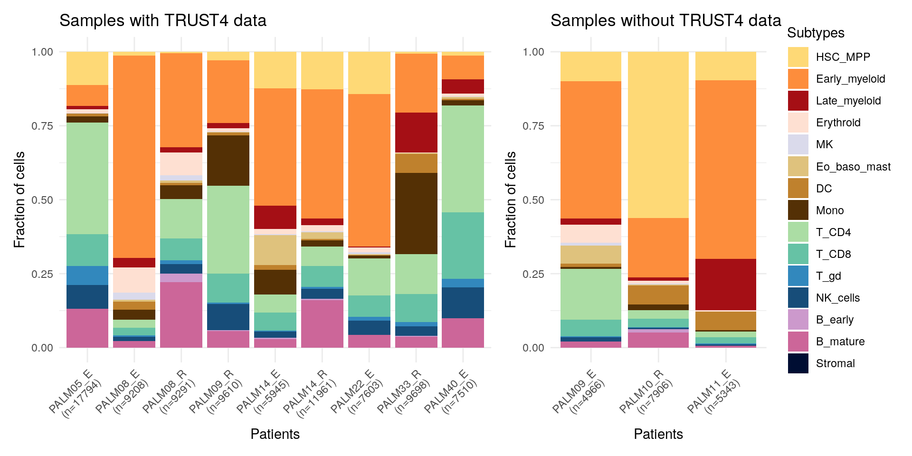
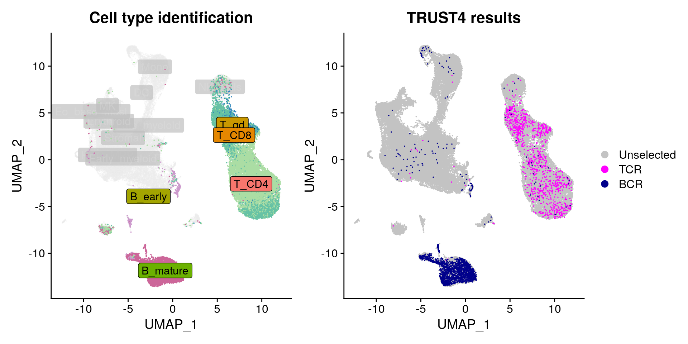
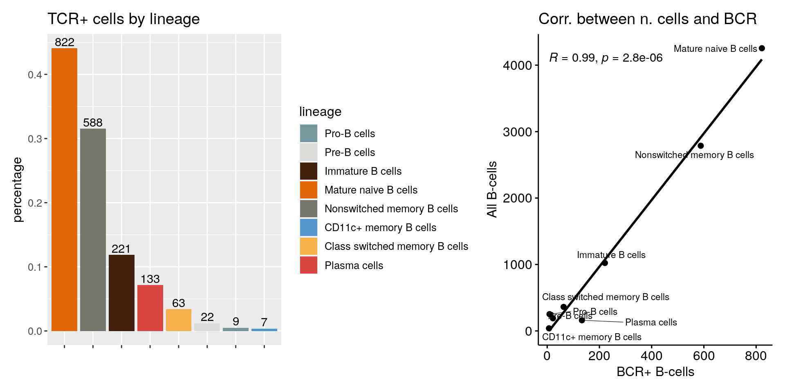
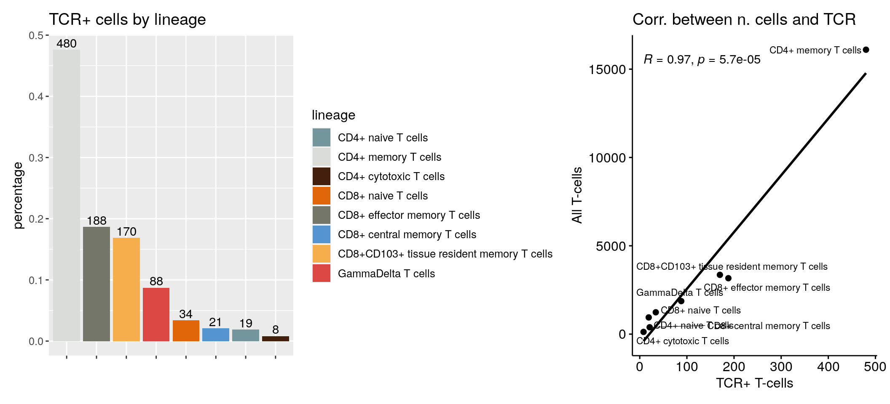
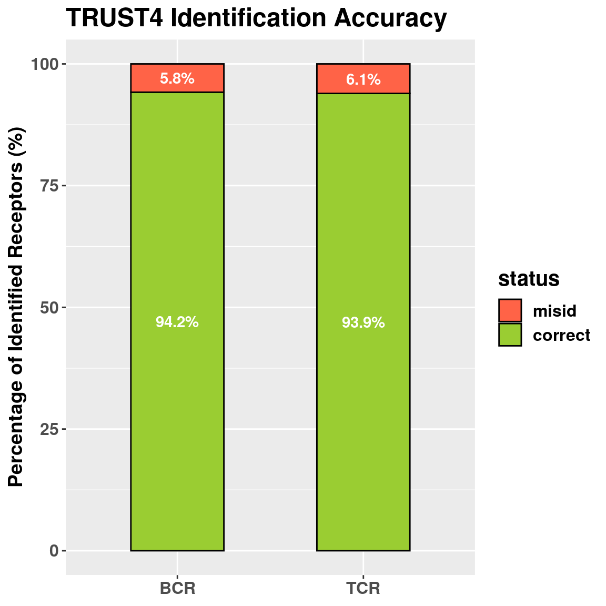

Last updated: 2026-07-29
Checks: 7 0
Knit directory: phenotype_genotype/
This reproducible R Markdown analysis was created with workflowr (version 1.6.2). The Checks tab describes the reproducibility checks that were applied when the results were created. The Past versions tab lists the development history.
Great! Since the R Markdown file has been committed to the Git repository, you know the exact version of the code that produced these results.
Great job! The global environment was empty. Objects defined in the global environment can affect the analysis in your R Markdown file in unknown ways. For reproduciblity it’s best to always run the code in an empty environment.
The command set.seed(20240315) was run prior to running the code in the R Markdown file. Setting a seed ensures that any results that rely on randomness, e.g. subsampling or permutations, are reproducible.
Great job! Recording the operating system, R version, and package versions is critical for reproducibility.
Nice! There were no cached chunks for this analysis, so you can be confident that you successfully produced the results during this run.
Great job! Using relative paths to the files within your workflowr project makes it easier to run your code on other machines.
Great! You are using Git for version control. Tracking code development and connecting the code version to the results is critical for reproducibility.
The results in this page were generated with repository version aac1183. See the Past versions tab to see a history of the changes made to the R Markdown and HTML files.
Note that you need to be careful to ensure that all relevant files for the analysis have been committed to Git prior to generating the results (you can use wflow_publish or wflow_git_commit). workflowr only checks the R Markdown file, but you know if there are other scripts or data files that it depends on. Below is the status of the Git repository when the results were generated:
Ignored files:
Ignored: .RData
Ignored: .Rhistory
Ignored: .Rproj.user/
Ignored: analysis/figure/
Ignored: data/
Ignored: src/
Untracked files:
Untracked: analysis/23_PALM14_R_pooled_illumina_filtered.rmd
Untracked: references.bib
Untracked: symbol_to_ensembl.csv
Unstaged changes:
Modified: analysis/15_PALM08_E_SNP.rmd
Modified: analysis/20_PALM14_R_pooled.rmd
Note that any generated files, e.g. HTML, png, CSS, etc., are not included in this status report because it is ok for generated content to have uncommitted changes.
These are the previous versions of the repository in which changes were made to the R Markdown (analysis/TRUST4_report.Rmd) and HTML (docs/TRUST4_report.html) files. If you’ve configured a remote Git repository (see ?wflow_git_remote), click on the hyperlinks in the table below to view the files as they were in that past version.
| File | Version | Author | Date | Message |
|---|---|---|---|---|
| Rmd | aac1183 | Basak Ozay | 2026-07-29 | Report |
After the genotyping analysis of our samples showed that T and B cells also contained mutations, we aimed to perform a validation of the T and B cell type annotation. In order to do that, we selected TRUST4, a bioinformatics algorithm that can perform V(D)J analysis using scRNAseq data.
T and B cells create receptor repertoires through somatic V(D)J (variable (V), diversity (D), and joining (J) gene segments) recombination. This recombination creates clones of unique TCR/BCR chains that are important for the function of adaptive immune system. As they don’t present in other cell types, they are a good way to characterize T and B cells. Previously, TCR/BCR analysis had not been part of scRNAseq analyses, but recent progress has extended to use of RNA-seq technologies in this regard[@seo2025]. The optimal approach is to use a 5’ V(D)J libraries as V(D)J regions are located at the 5’ end of transcripts.
TRUST4 was selected as the tool for the TCR/BCR identification part of our pipeline. A algorithm designed for the reconstruction of TCR/BCR sequences from RNAseq data, TRUST4 can work without a need for receptor enrichment.
For this step, we used a total of 12 Illumina samples, with cDNA libraries created using 10x GEM 3’ chemistry. All subsequent analysis was done using RStudio.
Initially, we ran TRUST4 with our whole transcriptome nanopore samples, as we thought the longer read lengths would allow for better identification. However, due to the low depth of nanopore and higher potential for insertion-deletions, the results of TRUST4 were noisy. As such, we decided to use the matched Illumina samples with TRUST4 instead.

As said previously, the main goal of this analysis was to validate T and B cells present in the genotyped samples. To that end, we first ran TRUST4 with the Illumina data of the 8 genotyped samples that we had at the time. Upon initial analysis, we saw that 3 of them were found to contain no V(D)J reads by the TRUST4 algorithm.
At this initial analysis, we also discovered that the number of TCR/BCR containing cells were quite low. As it reduced the total genotyped cells as well, we adjusted our workflow to identify the error rate of our cell type annotation approach, rather than only using TCR/BCR+ cells. This made us include another 4 samples that contained high numbers of T and B cells among our pediatric AML cohort, so that we could increase the final number of BCR/TCR+ cells for the later steps of our analysis.

After integration, there were 9,090 B and 27,190 T cells present within the 9 samples according to our cell type annotation. TRUST4 identified 1,980 BCR+ and 1,073 TCR+ cells. This included, as can be seen in the figure above, cells that were not annotated as T or B, but as myeloid lineages as well.


We also saught to see if all the present lineages were assigned a TCR/BCR sequence. As can be seen in the two figures above, both in T and B, all the present lineages contained at least one TCR or BCR sequence. When we compared the number of cells of a certain lineage with the number of cells that contained a TCR/BCR sequence within that lineage, we saw that there was a high correlation.
Following our initial analysis, we wanted to extrapolate the overall error of our cell type analysis using the results of TRUST4.
According to Song et al., 2021 the precision of the TRUST4 algorithm has (calculated in 5’ scRNAseq library compared to a V(D)J library) is 98.2 % for B Cells and 94.6% for T Cells, making their error rates as 1.8% and 5.4 respectively. We calculated our own error rate through:
\[ \frac{\text{T cells}^{TCR+}}{\text{T cells}^{TCR+} + \text{Non T cells}^{TCR+}}\ \]

According to calculations, our error rates were 5.8% and 6.1% for BCR and TCR identification respectively. Taken into account TRUST4’s error rates, the error in cell type annotation would be 5.8-1.8 = 4% for B cells and 6.1-5.4=0.7% for T cells.
In the end, based on all our results and considering that: (1) we found the low error rates to be low, (2) only using the TCR/BCR+ T/B cells would highly reduce the number of cells we would have for genotyping analysis (205 vs 2,346 for T and 355 vs 1,006 for B), and (3) three of our genotyped samples would need to be discarded completely (which would normally give an additional 1,217 genotyped T and 156 genotyped B cells), we decided to use all the T and B cells rather that only the TCR/BCR+ ones.
R version 4.0.3 (2020-10-10)
Platform: x86_64-pc-linux-gnu (64-bit)
Running under: Ubuntu 20.04.6 LTS
Matrix products: default
BLAS: /usr/lib/x86_64-linux-gnu/openblas-pthread/libblas.so.3
LAPACK: /usr/lib/x86_64-linux-gnu/openblas-pthread/liblapack.so.3
locale:
[1] LC_CTYPE=en_US.UTF-8 LC_NUMERIC=C
[3] LC_TIME=en_US.UTF-8 LC_COLLATE=en_US.UTF-8
[5] LC_MONETARY=en_US.UTF-8 LC_MESSAGES=en_US.UTF-8
[7] LC_PAPER=en_US.UTF-8 LC_NAME=C
[9] LC_ADDRESS=C LC_TELEPHONE=C
[11] LC_MEASUREMENT=en_US.UTF-8 LC_IDENTIFICATION=C
attached base packages:
[1] stats4 parallel stats graphics grDevices utils datasets
[8] methods base
other attached packages:
[1] plyr_1.8.6
[2] reshape2_1.4.4
[3] data.table_1.13.6
[4] ape_5.4-1
[5] gghighlight_0.3.1
[6] viridis_0.5.1
[7] viridisLite_0.3.0
[8] SeuratObject_4.0.0
[9] Seurat_4.0.0
[10] seqinr_4.2-36
[11] msaR_0.6.0
[12] patchwork_1.1.1
[13] ggpubr_0.4.0
[14] DGEobj.utils_1.0.6
[15] idpr_1.0.007
[16] SecretSanta_0.99.0
[17] Biostrings_2.58.0
[18] XVector_0.30.0
[19] org.Hs.eg.db_3.12.0
[20] IsoformSwitchAnalyzeR_1.12.0
[21] DEXSeq_1.36.0
[22] RColorBrewer_1.1-2
[23] DESeq2_1.30.1
[24] SummarizedExperiment_1.20.0
[25] MatrixGenerics_1.2.1
[26] matrixStats_0.58.0
[27] BiocParallel_1.24.1
[28] limma_3.46.0
[29] biomaRt_2.46.3
[30] TxDb.Hsapiens.UCSC.hg38.knownGene_3.10.0
[31] GenomicFeatures_1.42.3
[32] AnnotationDbi_1.52.0
[33] Biobase_2.50.0
[34] GenomicRanges_1.42.0
[35] GenomeInfoDb_1.26.7
[36] IRanges_2.24.1
[37] S4Vectors_0.28.1
[38] BiocGenerics_0.36.1
[39] forcats_0.5.1
[40] dplyr_1.0.4
[41] purrr_0.3.4
[42] readr_1.4.0
[43] tidyr_1.1.2
[44] tibble_3.0.6
[45] ggplot2_3.3.3
[46] tidyverse_1.3.0
[47] stringr_1.4.0
loaded via a namespace (and not attached):
[1] rappdirs_0.3.3 rtracklayer_1.50.0
[3] scattermore_0.7 bit64_4.0.5
[5] knitr_1.31 irlba_2.3.3
[7] DelayedArray_0.16.3 rpart_4.1-15
[9] hwriter_1.3.2 RCurl_1.98-1.2
[11] AnnotationFilter_1.14.0 generics_0.1.0
[13] cowplot_1.1.1 lambda.r_1.2.4
[15] RSQLite_2.2.3 RANN_2.6.1
[17] future_1.21.0 bit_4.0.4
[19] spatstat.data_2.0-0 xml2_1.3.2
[21] lubridate_1.7.9.2 httpuv_1.5.5
[23] assertthat_0.2.1 xfun_0.21
[25] tximport_1.18.0 hms_1.0.0
[27] evaluate_0.14 promises_1.1.1
[29] progress_1.2.2 dbplyr_2.1.0
[31] readxl_1.3.1 igraph_1.2.6
[33] DBI_1.1.1 geneplotter_1.68.0
[35] htmlwidgets_1.5.3 futile.logger_1.4.3
[37] paletteer_1.3.0 ellipsis_0.3.1
[39] backports_1.2.1 prismatic_1.0.0
[41] annotate_1.68.0 deldir_0.2-9
[43] vctrs_0.3.6 ensembldb_2.14.1
[45] ROCR_1.0-11 abind_1.4-5
[47] cachem_1.0.3 withr_2.4.1
[49] BSgenome_1.58.0 sctransform_0.3.2
[51] GenomicAlignments_1.26.0 prettyunits_1.1.1
[53] goftest_1.2-2 cluster_2.1.0
[55] lazyeval_0.2.2 crayon_1.4.1
[57] genefilter_1.72.1 labeling_0.4.2
[59] edgeR_3.32.1 pkgconfig_2.0.3
[61] nlme_3.1-152 ProtGenerics_1.22.0
[63] rlang_0.4.10 globals_0.14.0
[65] lifecycle_0.2.0 miniUI_0.1.1.1
[67] BiocFileCache_1.14.0 modelr_0.1.8
[69] AnnotationHub_2.22.1 VennDiagram_1.6.20
[71] polyclip_1.10-0 cellranger_1.1.0
[73] rprojroot_2.0.2 lmtest_0.9-38
[75] Matrix_1.3-2 carData_3.0-4
[77] tximeta_1.8.5 zoo_1.8-8
[79] reprex_1.0.0 whisker_0.4
[81] ggridges_0.5.3 png_0.1-7
[83] bitops_1.0-6 KernSmooth_2.23-18
[85] blob_1.2.1 workflowr_1.6.2
[87] parallelly_1.23.0 rstatix_0.6.0
[89] ggsignif_0.6.0 scales_1.1.1
[91] memoise_2.0.0 magrittr_2.0.1
[93] ica_1.0-2 zlibbioc_1.36.0
[95] compiler_4.0.3 fitdistrplus_1.1-3
[97] Rsamtools_2.6.0 cli_2.3.0
[99] ade4_1.7-23 listenv_0.8.0
[101] pbapply_1.4-3 formatR_1.7
[103] mgcv_1.8-33 MASS_7.3-53
[105] tidyselect_1.1.0 stringi_1.5.3
[107] highr_0.8 yaml_2.2.1
[109] askpass_1.1 locfit_1.5-9.4
[111] ggrepel_0.9.1 grid_4.0.3
[113] tools_4.0.3 future.apply_1.7.0
[115] rio_0.5.16 rstudioapi_0.13
[117] foreign_0.8-81 git2r_0.28.0
[119] gridExtra_2.3 farver_2.0.3
[121] Rtsne_0.15 digest_0.6.27
[123] BiocManager_1.30.10 shiny_1.6.0
[125] Rcpp_1.0.6 car_3.0-10
[127] broom_0.7.4 BiocVersion_3.12.0
[129] later_1.1.0.1 RcppAnnoy_0.0.18
[131] httr_1.4.2 colorspace_2.0-0
[133] tensor_1.5 rvest_0.3.6
[135] XML_3.99-0.5 fs_1.5.0
[137] reticulate_1.18 splines_4.0.3
[139] uwot_0.1.10 statmod_1.4.35
[141] rematch2_2.1.2 spatstat.utils_2.0-0
[143] plotly_4.9.3 xtable_1.8-4
[145] jsonlite_1.7.2 futile.options_1.0.1
[147] spatstat_1.64-1 R6_2.5.0
[149] pillar_1.4.7 htmltools_0.5.1.1
[151] mime_0.9 DRIMSeq_1.18.0
[153] glue_1.4.2 fastmap_1.1.0
[155] interactiveDisplayBase_1.28.0 codetools_0.2-18
[157] lattice_0.20-41 curl_4.3
[159] leiden_0.3.7 zip_2.1.1
[161] openxlsx_4.2.3 openssl_1.4.3
[163] survival_3.2-7 rmarkdown_2.6
[165] munsell_0.5.0 GenomeInfoDbData_1.2.4
[167] haven_2.3.1 gtable_0.3.0
[169] DGEobj_1.1.2